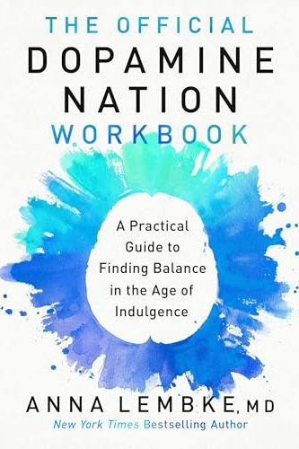

Library › Psychology & People
Dopamine Nation — Summary & Key Lessons

Finding balance in the age of indulgence — why everything feels like an addiction now, and the science of resetting your brain.
📖 OPEN THE FULL INTERACTIVE BREAKDOWN →🌐 Read it in Hindi, Hinglish, Gujarati, Tamil & 22 more languages — free, with audio.
💡 The Big Idea
Stanford addiction psychiatrist Anna Lembke's central image is the pleasure-pain BALANCE: one neural see-saw. Every hit of pleasure (sugar, likes, porn, shopping, news, weed) tips it toward pleasure — and the brain, obsessed with level ground (homeostasis), pushes back with an equal, opposite tip toward pain. Repeat the hit, and the brain adapts: 'gremlins hop on the pain side' — tolerance grows, the pleasure shrinks, baseline mood sinks, until you need the thing just to feel NORMAL. That's the dopamine-deficit state, and in the smartphone era — where the world became 'a giant hypodermic needle of dopamine' — entire populations live there: anxious, joyless, always consuming, never satisfied. The way out is counterintuitive: STOP pressing the pleasure side (a 30-day dopamine fast resets the balance for most patients), embrace SELF-BINDING (structural barriers between you and your drug — because willpower loses), and deliberately press the PAIN side (exercise, cold, fasting, hard conversations) — which tips the see-saw so the brain rebounds with durable, earned pleasure. Radical honesty, finally, is the glue: truth-telling strengthens the exact prefrontal circuits addiction weakens.
🧠 The 6 Key Lessons
Lesson 1: The Pleasure-Pain Balance: Why More Feels Like Less
Chapters 1-3: The Balance
Pleasure and pain are processed in overlapping brain regions and behave like a see-saw. A hit of dopamine (chocolate, a like, a win) tips it to pleasure — then the brain restores level by adding an opposite process (the after-craving, the slight emptiness when the video ends). With REPEATED hits: neuroadaptation. The opposing response grows stronger and lasts longer — tolerance — so the same stimulus delivers less joy and more aftermath. Keep going and the balance sets permanently tilted toward pain: the dopamine-deficit state, clinically indistinguishable from depression and anxiety. This is why the most-entertained generation in history reports the most boredom, why the porn user needs escalation, why the scroller feels WORSE after an hour of 'fun.' The cruelest part: in deficit state, the drug no longer gets you high — it only gets you back to zero. You're not chasing pleasure anymore; you're paying rent on a debt the pleasure created.
📖 Example: Lembke's patient 'David,' a bright, kind college student: started with occasional weed and gaming, escalated across years into daily use just to feel okay, arriving at her office anxious, unmotivated, and baffled — 'nothing feels good anymore, including the… Read the full example →
⚡ Do this: Name YOUR drug honestly (the thing you reach for automatically: scrolling, sugar, news, shopping, porn, weed). For 3 days, log every use and rate the pleasure 1-10 — most people discover the real number is 2-3, and they're not using for pleasure at all; they're using to escape the deficit.
Lesson 2: The Dopamine Fast: 30 Days to Reset the Balance
Chapter 3: The DOPAMINE framework
Lembke's clinical protocol for any compulsive behavior: abstain from your drug of choice for FOUR WEEKS — the minimum time neuroadaptation needs to unwind (two weeks feels terrible, which is why two-week attempts 'prove' abstinence doesn't work). Warn yourself in advance: the first 10-14 days you'll feel WORSE — anxious, irritable, insomniac, bored beyond belief — because you're finally feeling the underlying deficit without the anesthetic. That's not evidence you need the drug; it's the withdrawal you were prepaying daily. Around weeks 3-4, most patients report what she calls the miracle of ordinary things: baseline mood lifts, small pleasures work again, boredom becomes generative. THEN comes the real decision: many can reintroduce moderately with binding rules; some (true addiction) discover moderation isn't available to them — also invaluable data. Note what the fast is NOT: it's not the tech-bro 'dopamine detox' of sitting in a dark room. You fast from YOUR drug, not from life.
📖 Example: Her patient Jacob, a chronic compulsive user of increasingly extreme digital sexual stimulation, begged for medication; she prescribed 30 days off instead. His report at week two: 'worst I've felt in years.' Week five: sleeping normally, enjoying meals with… Read the full example →
⚡ Do this: Pick your one drug and calendar a 30-day fast starting Monday. Tell one person. Pre-plan the trough (days 5-14): replacement activities for your trigger times, and a written note to your suffering self: 'This is withdrawal, not truth. Week 4 is coming.'
Lesson 3: Self-Binding: Build Fences, Not Willpower
Chapters 4-5: Self-Binding
Willpower is a myth at scale — in a world engineered to hijack your balance, the reliable strategy is SELF-BINDING: intentionally placing barriers between yourself and your drug BEFORE desire arrives (Ulysses tying himself to the mast before the sirens, not during). Three fence types. PHYSICAL/SPATIAL: distance and friction — no phone in the bedroom, apps deleted (reinstalling is friction), no alcohol in the house, separate work device. TEMPORAL/CHRONOLOGICAL: time boxes — only on weekends, only after 6 PM, only 30 minutes by timer; the boundary converts 'always available' into 'sometimes, deliberately.' CATEGORICAL: whole categories off-limits because the category is the slippery slope for YOU — the gambler who also avoids crypto trading; the porn quitter who cuts Instagram explore. The deep insight: self-binding isn't weakness or puritanism — it's the honest acknowledgment that the you-of-8-PM is a different, weaker negotiator than the you-of-this-morning, and the strong one should set the terms.
📖 Example: Lembke herself — the world expert — confesses her own descent into compulsive romance-novel reading, escalating to staying up all night with erotica on her Kindle. Her fix wasn't insight (she had all the insight on earth); it was binding: she deleted the… Read the full example →
⚡ Do this: For your drug, install one fence of each type this week: physical (delete/distance/friction), temporal (a defined window with a timer), categorical (name the adjacent gateway you'll also avoid). Write them down — vague fences hold nothing.
Lesson 4: Pressing the Pain Side: Earned Pleasure and Radical Honesty
Chapters 6-9: Pain and Honesty
The balance works both ways: deliberately tip it toward PAIN, and the brain rebounds toward pleasure — slower, but durable and non-inflating. This is the science of hormesis: exercise (dopamine rises for HOURS after, unlike the spike-crash of consumption), cold exposure (one study: 250% dopamine elevation, sustained), fasting, hard learning, difficult conversations. The people who feel best aren't avoiding discomfort; they're front-loading it — paying pain first for pleasure that lasts, instead of pleasure first for pain that compounds. The final pillar is RADICAL HONESTY: telling the truth, especially the small uncomfortable truths, in all things. Addiction lives in secrecy (the hidden bottle, the incognito tab); every lie strengthens the disconnect between prefrontal cortex and limbic brain, while truth-telling literally exercises the circuits of self-control — and shame dies in the light: her patients in recovery groups relapse less not because of surveillance, but because being fully known while still being accepted is itself the drug they were always seeking.
📖 Example: Lembke's cold-water patient Michael, a cocaine addict who discovered ice baths in recovery: the plunge hurt, then delivered hours of clean, calm alertness — 'the feeling I was chasing with coke, minus the crash.' He built his mornings around it. Meanwhile… Read the full example →
⚡ Do this: Add one deliberate discomfort to your mornings this week (cold shower finish, a hard walk, 16-hour fast, the difficult email first). And run the honesty experiment for 48 hours: zero lies, including small social ones. Notice what gets easier when nothing needs hiding.
Lesson 5: Dopamine Overload: The Highs That Hollow You Out
Part 1: The Problem
Lembke's neuroscience primer: dopamine is the molecule of 'more' — it drives wanting, not liking — and modern life has turned it from a scarcity system into a firehose. Pornography, social media, gaming, junk food and gambling all deliver dopamine hits that our ancestors never encountered, and the brain adapts by down-regulating its receptors: what used to feel good now feels normal, and what used to feel normal now feels flat. The result is a population chasing escalating highs to feel baseline. The first step is diagnosis: the things you can't stop doing aren't 'weaknesses', they're your brain's reward system hijacked by abundance. Naming the mechanism is the beginning of the fix.
📖 Example: Lembke describes patients who lost careers and marriages to behaviours they knew were destroying them — not because they were weak, but because their dopamine balance had been tipped so far that withdrawal felt unbearable. The brain, not the will, was the… Read the full example →
⚡ Do this: Identify your single most compulsive behaviour. For one week, track how many times a day you do it — just track, don't judge. Awareness is the first dose.
Lesson 6: Dopamine Fasting Done Right: The Reset That Actually Works
Part 2: The Reset
Lembke's practical protocol is more nuanced than 'quit everything': a dopamine fast means abstaining from your compulsive behaviour long enough for the brain's balance to reset — typically 4 weeks for the most stubborn habits. The key details: commit to a fixed period (not 'forever', which triggers panic), expect the discomfort (the first two weeks are the withdrawal), and have a plan for the inevitable urges — because the urges are the brain rebalancing, not a sign of weakness. What you learn during the fast is the real prize: which feelings the behaviour was numbing, and what fills the space when it's gone. The reset isn't about deprivation; it's about regaining the ability to choose.
📖 Example: Lembke tells of a patient who gave up social media for a month and reported, after the withdrawal passed, something she hadn't felt in years: boredom — and then, out of that boredom, creativity and real connection she had replaced with scrolling. Read the full example →
⚡ Do this: Choose one behaviour and commit to a 30-day fast starting this week. Write your trigger plan now: what you'll do in the exact moment the urge hits.
✅ 5-Step Action Plan
- Name your drug and log its REAL pleasure rating for 3 days — see the deficit clearly.
- Run a 30-day fast from that one thing; pre-plan for the day 5-14 trough.
- Install three fences: physical friction, a time box, and a named gateway to avoid.
- Buy pleasure with pain first: daily exercise, cold, or fasting before any screen reward.
- Practice radical honesty — the small true sentence today beats the big confession never.
⚠️ When This Doesn't Work
Lembke's dopamine fasting is wise for individuals and nearly useless for crowds — Tulip Mania wasn't a few addicts chasing a high; it was an entire nation's collective dopamine spike, a feedback loop that no personal 'dopamine fast' could interrupt. The book can make you feel that self-control is the answer to systemic addiction — it isn't. You can delete the apps and still lose the week to the market's dopamine cycle, the festival's, the election's. Individual discipline matters; collective regulation is where the real war is fought.
💀 The Graveyard Proves It
🌷 Tulip Mania — When a Flower Cost More Than a House. Burn: The first recorded bubble. Read the full case study →
💬 Best Quotes from Dopamine Nation
- “The relentless pursuit of pleasure (and avoidance of pain) leads to pain.”
- “The smartphone is the modern-day hypodermic needle, delivering digital dopamine 24/7.”
- “Recovery begins with radical honesty.”
Interactive version: mark lessons as read, listen in your language, share quote cards.